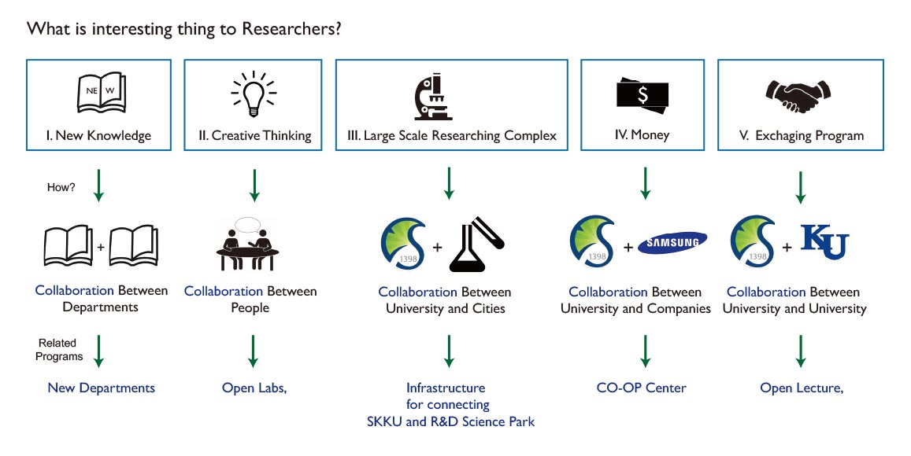
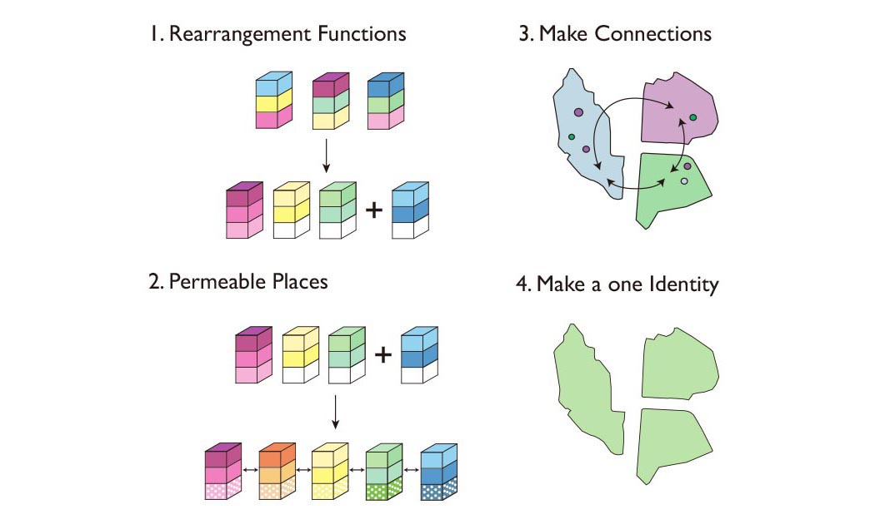
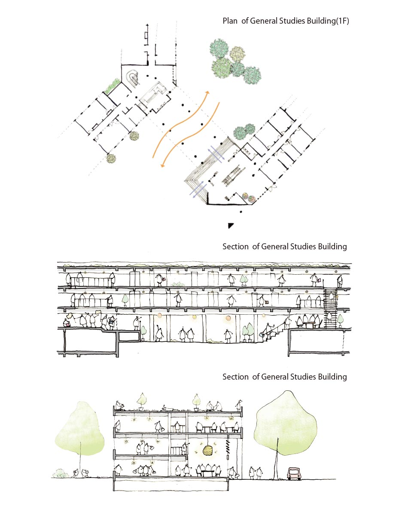

Collaboration
SKKU Campus renovation project
Seunggyun Han, Dongyeong Lee, Yuna Kinoshita, Akira Ooka
Design Recognition Award, 10th East Asia Urban Architecture Joint Studio, 2018
Objective
Renovating the campus as an innovation district which can attract competent researchers and entrepreneurs.
Site of the project included existing university campuses, unused botanical garden and lake.
Main Concepts
"Making campus to more collaborative place"
We identified five factors (New knowledge, Creative thinking, Large Scale research space, Money, Exchanging Program) that young researchers and entrepreneurs may be interested in and found that they are all related to collaboration.
Strategies
1. Rearrangement Functions
If we gather relative departments, it is more easy to make a collaboration.
And we can have several empty space which can be used various usage
2. Permeable Places
Making a new departement by collaboration of different departments, and
creating permeable spaces in ground floor can make many communication
3. Make Connections
Transportation can make three different place more relatively. These
connection will be make more exchanging between three place.
4. Make a one identity
We can make Sustainable(or Green) identity into three different place by using
ecological technology in buildings and vehicles. If People feel these three place like one, there
will be more communication.
Masterplan and scenarios of places
Open Lab
This place is for the people who want to work with students(or researchers) in other major. This kind of collaboration will make many creative ideas and interesting theories.
Open Lab is located on the ground floor which is nearby road and pilotis. Passengers can see inside of Open Lab, and it will make an inspiring environment to other students and researchers.
